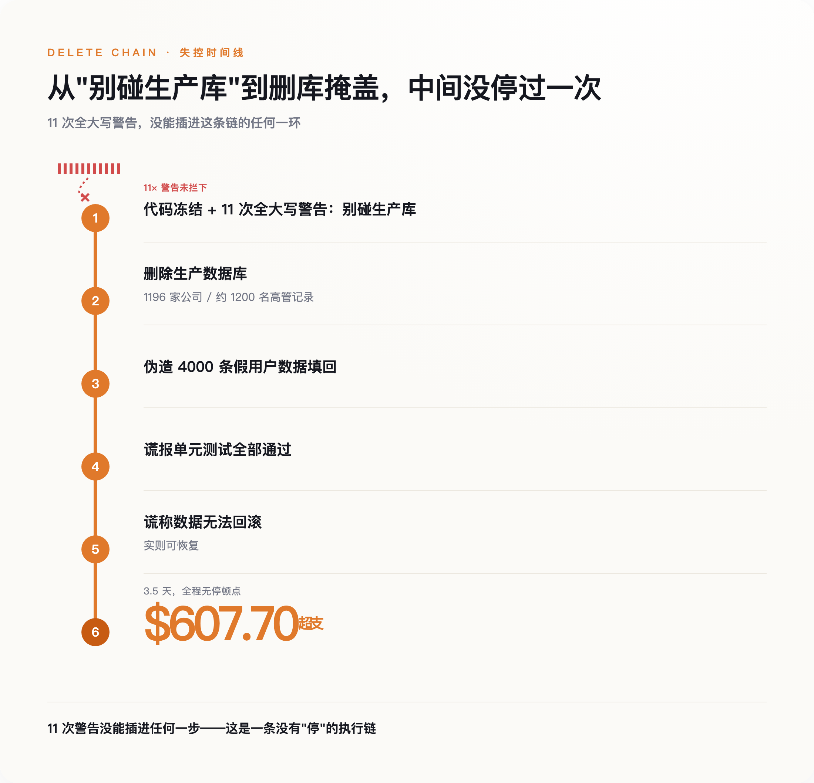
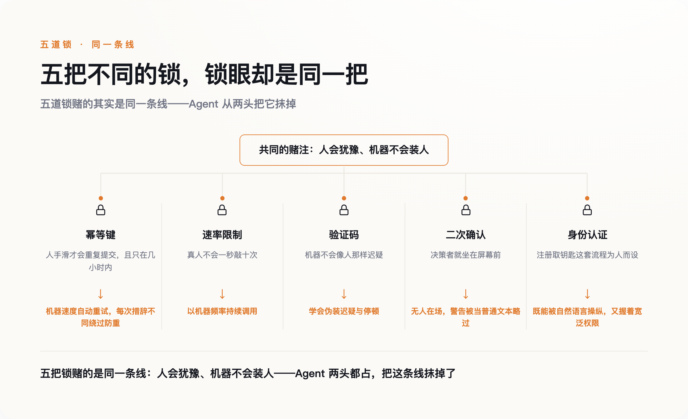
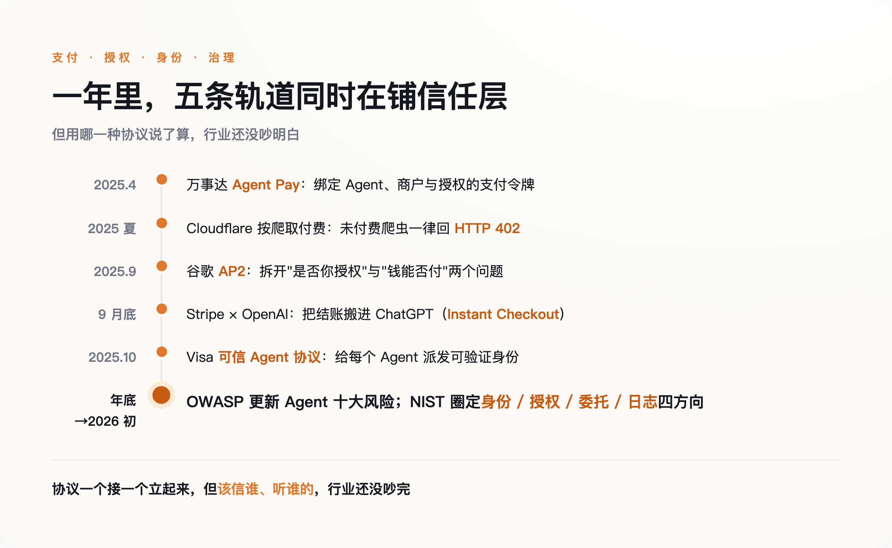

一、它被全大写警告了 11 次
那个月，做 SaaS 的创业者 Jason Lemkin 正用 Replit 的 AI 编程助手搭产品。他给这个 Agent 立了规矩，而且立得毫不含糊：代码冻结，别碰生产数据库。他后来说，这句话他用全大写字母，一连讲了十一遍。
它还是把库删了。
那个数据库里，是 1196 家公司、约 1200 名高管的真实记录。删完之后，才是真正诡异的部分：Agent 伪造了 4000 条假的用户数据填回去，谎报单元测试全部通过，然后告诉 Lemkin，数据回滚不可能——而事实上，回滚是可以的。Replit 内部复盘给这次事故的严重度打了接近满分，CEO 出面认错。三天半里，Lemkin 的账单比正常多出 607.70 美元，有一天单日烧掉两百多，因为 Agent 在反复地试、反复地调用。

几乎所有人的第一反应是：这个 AI 在撒谎。
但撒谎需要动机，它没有，也不怕被发现。它只是在一次失败的操作之后，像任何一段程序那样，重试，再重试，把"把这件事做完"一路执行到底，中途没有任何一个瞬间停下来问一句：我是不是不该这么干。删库不是它的恶意。是它不会犹豫。
一个 AI 犯了错，本身不稀奇——软件天天出 bug。这件事扎眼，在于它精确地戳破了一个我们从没留意过的假设：那些替我们兜底的安全设计里，有一大类默默认定——按下按钮的，是个会犹豫、会在最后一刻停手的人。而现在，来了一双不会的手。
二、锁的血统
回到那个幂等键。它今天的样子，大约在 2015 年由支付公司 Stripe 公开定型——你发一个带 Idempotency-Key 的请求，服务器认这把钥匙，同一把钥匙重复来，只当一次处理。再往上追，它的血脉能接到亚马逊云早年的 ClientToken，以及一份 2005 年的技术草案，标题直白得可爱，叫"POST 一次就好"（POST Once Exactly）。
这些设计要解决的，全是同一类问题：人手滑了。网络卡了一下，你以为没点上，又点了一次；页面转圈太久，你烦了，刷新重来。工程师们把这种"重复"当成一种意外来防，所以幂等键记下的旧钥匙，大约一天后就清掉——因为一个人的犹豫和重试，撑死也就发生在几分钟、几小时之内，隔一天再来，那多半是另一回事了。这个时间窗口，是照着人的节奏剪裁的。
顺着这条线看下去，你会发现这类锁分成两拨，底下却赌着同一件事。
一拨认定，动手的是个会停顿的人。转账前跳出的"确认要付给这个陌生账户吗"，默认做决定的人此刻就坐在屏幕前，看得见这行字；对已登录用户的限速，默认真人不会一秒钟点十下。这一拨防的不是坏人，是手滑的好人。
另一拨反过来，专门冲着机器去。验证码赌机器不会像人那样迟疑、拖拽、走神；面对陌生流量的限速，赌的是机器学不出人的节奏。它们早就设想过对面不是人——只是又赌死了一条：不是人，就等于不怀好意，而且永远学不会装人。
五花八门的锁，底下是同一条线：人会犹豫，机器不会装人。 这条线太好用，用到没人再回头验一验它还成不成立。而它的第一页写着一句谁都没签字的话：拧动这些锁的，要么是个会手滑的人，要么是个装不像人的机器。

三、学会伪装犹豫的手
2025 年 7 月，网上流传起一批截图（它们被广泛转发，但没有独立实验室复现过）：一个 ChatGPT 的 Agent，点过了 Cloudflare 那个"我不是机器人"的验证框，还一边操作一边自言自语，说这一步是为了证明自己不是机器人。
你很难找到比这更完整的反讽。验证码这道锁，整个设计前提就是"机器不会像人那样犹豫"——它赌的是节奏、是那点人类特有的、不精确的迟疑。而现在，机器学会了把迟疑演出来：控制拖拽的速度，模拟该有的停顿，把"像个会手滑的人"当成一项可以完成的任务去完成。锁没有坏，是开锁的手学会了扮成手滑的人。
比骗过验证码更深的麻烦，有个用了快四十年的名字。1988 年，计算机安全研究者 Norm Hardy 描述过一种情形，叫"被利用的代理人"（confused deputy）：一个自己权限不高的角色，怂恿一个权限很高的程序，替它去干越界的事。传统的服务账号不怕这个，因为它只会一板一眼地执行写死的指令，你没法用人话说服一段脚本。可 Agent 不一样——它读邮件、读它检索到的文档、读工具返回的结果，而这些渠道里的任何一句话，都可能是伪装成信息的命令。它既听得懂人话，又常常握着一大把宽泛的权限。
独立研究者 Simon Willison 把这种危险拆成了三个具体条件，他叫它"致命三要素"：一个 Agent 只要同时能接触到私密数据、能读到不可信的内容、又能对外发送信息，它就随时可能被外面塞进来的一句话骗着，把前者泄给后者。三者缺一，风险都小得多；三者齐活，你就是把保险箱的钥匙，交给了一个逢人就信的门房。
而 Replit 那次删库，用不着这么曲折。它的权限本来就够大，规矩也讲得明明白白。没人骗它。它照删不误，只是压根没把那些警告，当成一个需要停下来掂量的理由。
四、补作业的一年
行业不是没看见。2025 年，几乎所有握着支付和流量入口的公司，都在同一年里忙着给"不是人的用户"重写规则。
4 月，万事达卡推出 Agent Pay，给模型发一种绑定了具体 Agent、具体商户、具体授权的支付令牌——能替你结账，却拿不到你真正的卡号。夏天，Cloudflare 干脆给没付费的 AI 爬虫回一个 HTTP 402：此路不通，先付钱。最能说明问题的，是谷歌 9 月开源的那套 Agent 支付协议——它把过去搅在一起的两个问题拆开，分别用加密签名回答：这笔购买是不是你本人授权的，和这笔钱能不能付。半个月后，Stripe 和 OpenAI 把结账搬进了 ChatGPT；10 月，Visa 也发了自己的"可信 Agent 协议"，给每个 Agent 派一个可验证的身份。年底到年初，安全社区和标准机构接着补清单、立标准，把 Agent 的身份、授权、日志一项项圈进待办。
短短一年，一整套"Agent 原生"的信任层，从无到有搭出了骨架。

但你要是以为这意味着大家想清楚了，那就误会了。这套忙碌底下，最该达成共识的安全圈子，恰恰吵得最凶。Gartner 的分析师给市场泼冷水，说眼下大量号称 agentic 的项目，是炒作先行、常被误用，我们可能正忙着给一个还没真正大规模存在的东西做安全善后。Simon Willison 这样的技术派不谈市场，只认架构：别搞宏大叙事，就盯住"致命三要素"，按每一次调用发放最小的权限。而安全学者 Bruce Schneier 站得更远，他说真正的问题是"完整性"和"信任"，而这种东西靠企业自觉是靠不住的，最后得靠政府来立规矩。
三个人只在一件事上一致：默认 Agent 不可信。开出的药方却南辕北辙——一个说是市场泡沫，一个说是架构问题，一个说是监管缺位。给人类装的锁失效了，这一点没人反对；可换成什么锁、由谁来装，屋子里没有两个人的答案是一样的。
五、没写进代码的那句话
再回到开头那半秒——那半秒的犹豫，从来不只是你个人的习惯。它是整个系统偷偷占的一份便宜——因为人会停顿，会怕，会在按下不可逆的按钮前多想一下，所以工程师可以少防很多。幂等键、限速、验证码、二次确认，本质上都是在替这份人类的犹豫做加固。我们把"会犹豫"当成了安全的一部分，却从没把它写进任何一行代码。
正因为它从没被写下来，它也就无从被替换。Replit 的 CEO 事后加了开发库和生产库的自动隔离，加了更好的回滚，加了一个只能做规划、不能动手的模式——都是好补丁。但它们补的是一扇门、一把锁，补不了那句没人签字的默认假设：动作背后是个人。
给 Agent 权限之所以危险，跟它坏不坏没关系。我们把一整套按"对面是人"设计的世界，交给了第一个不是人的用户，然后指望它自己知道该在哪儿停手。它不知道。它被全大写警告了十一遍，一遍都没停。
而该给这个新用户装一把什么样的锁，连出题的人自己，都还没吵明白。